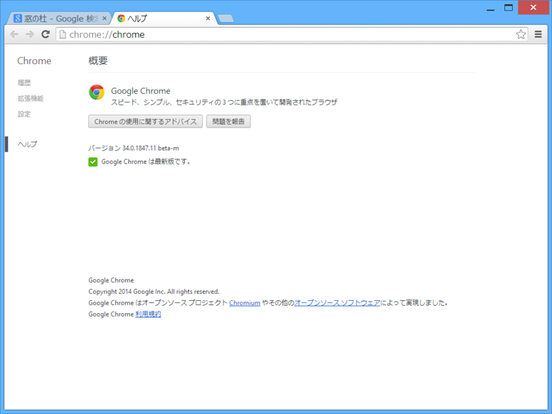
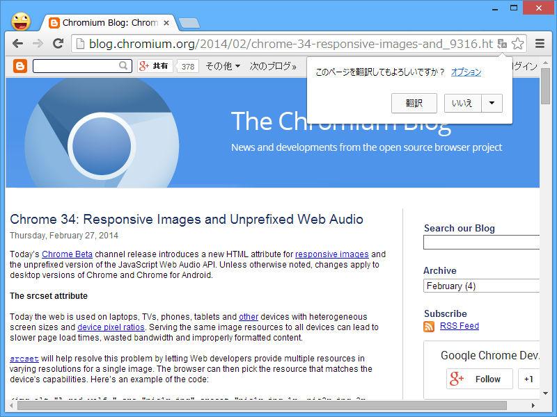
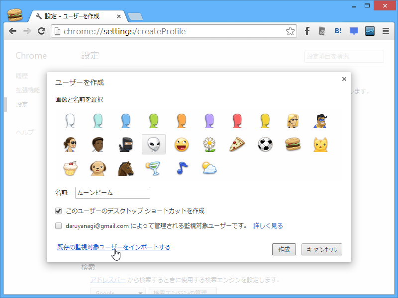
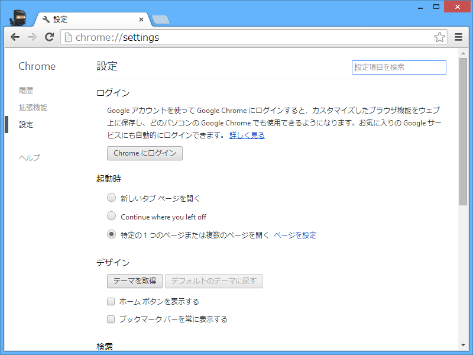

Google Chrome 34.0.1847.11 beta
公開日：

- Chrome ブラウザ
- Chromium Blog: Chrome 34: Responsive Images and Unprefixed Web Audio
- Chrome Releases: Beta Channel Update

翻訳ツールバーがポップアップになってた。あと、スクロールバーに矢印が復活したのかな。

監視対象ユーザーのインポート。

あと、今まで気づいてなかったのだけど“Continue where you left off”ってなんだろ。あとで調べよう。